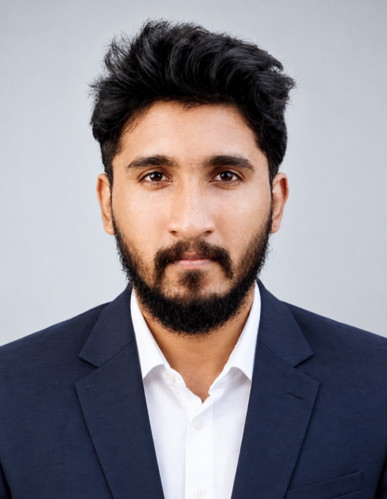

Unni Rengan
IT infrastructure officer and AI/ML engineer working across enterprise web servers, core banking systems and applied machine learning, based in Ernakulam, Kerala.

About
profileI hold a Master of Technology in Computer Science Engineering, specialised in Artificial Intelligence and Software Engineering, built on an earlier degree in Electrical and Electronics Engineering. That combination is what shapes how I work: comfortable moving between machine learning experiments and the physical and network infrastructure that keeps systems running.
Day to day, I support enterprise IT operations at a bank — web servers, reverse proxies, core banking software and the Linux and AIX systems underneath them — while continuing to build and ship AI/ML projects on the side.
- Based in
- Ernakulam, Kerala, India
- Currently
- IT Support Officer, Federal Bank
- Focus
- IT infrastructure · AI & ML · Data Science
- Languages
- English, Hindi, Malayalam
Experience
2023 — presentIT Support Officer
Provide technical support and troubleshooting for internal banking systems, manage hardware and software issues, and assist with network configuration. Working hands-on with Apache HTTPD, Apache Tomcat, Nginx and HAProxy, including basic reverse proxy configuration and load balancing under senior supervision. Gaining practical exposure to Linux and IBM AIX administration, Oracle database environments and the Finacle Core Banking Solution, alongside IT ticket resolution and user onboarding.
Real-Time Data Acquisition & Monitoring
Built a real-time, multi-channel data acquisition and monitoring system over UDP, with low-latency transmission, signal analysis (FFT, amplitude, phase) and a GUI for live monitoring of network parameters.
Internship — Emerging Technologies (AI & Cloud)
Focused on cloud computing, AI and data analytics: hands-on AI/ML experiments, data analysis and chatbot development using IBM Cloud and AutoAI in a collaborative virtual environment.
Graduate Apprentice — Electrical
Repaired and overhauled electrical equipment and transformers of various ratings. Operated and maintained HT circuit breakers (OCB, VCB, ACB), overhead lines, HT/LT underground cables and cable-jointing works, with exposure to a 110 kV substation running SCADA.
Projects
selected workSarcasm Detection
A machine learning model trained on a labelled dataset of sarcastic and non-sarcastic sentences to classify sarcasm in text.
Leaf Disease Detection
A CNN built with TensorFlow to detect disease in coffee leaves from image data.
Real-Time Multi-Channel Data Acquisition
A low-latency system for acquiring and monitoring multi-channel data over the UDP protocol, with a live monitoring GUI.
PLC-Controlled Conveyor
A conveyor system automated and controlled using a Programmable Logic Controller.
Skills
toolboxProgramming
- C++
- Python
AI & Data
- Machine Learning
- Data Science
- Artificial Intelligence
Infrastructure
- Apache Tomcat
- Apache HTTPD
- Nginx
- HAProxy
- Reverse Proxy Config
- Finacle (CBS)
Working style
- Interpersonal Skills
- Quick Learner
- Critical Thinking
- Problem Solving
- Public Speaking
- Team Collaboration
Education
2015 — 2025Certifications
continuing educationLanguages
C2 = proficient user- English
- C2 · Fluent
- Hindi
- C2 · Fluent
- Malayalam
- Native